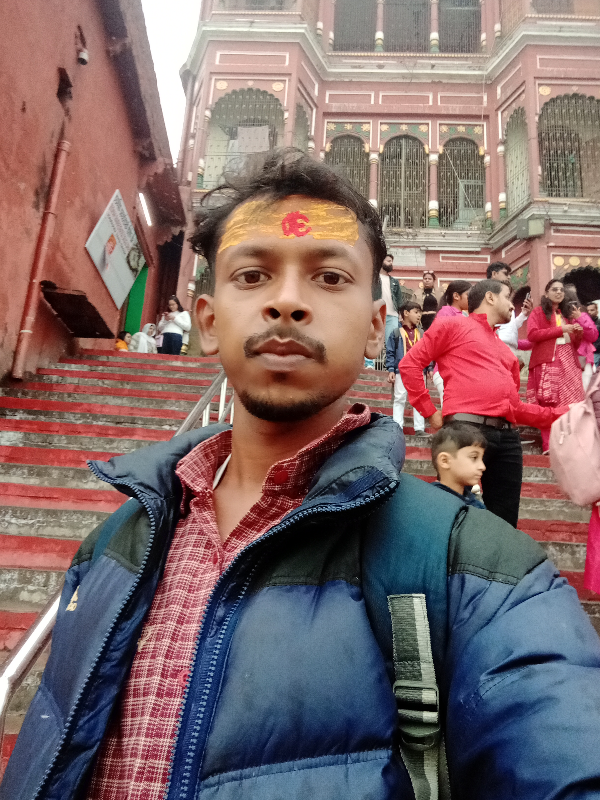

Benares/ Varanasi/Kashi is the name for the same city, which is the spiritual and cultural capital and also the oldest living civilization of the world.
Varanasi, an ancient city steeped in profound spirituality, stands as a central pilgrimage site in India, where the sacred Ganges River flows, hosting daily rituals along its iconic ghats. The city's atmosphere resonates with temple bells and devotional songs, drawing devotees seeking spiritual cleansing and inner peace. It is a hub of Hindu traditions, deeply connected to the cycles of life and death, and attracts those embarking on a journey of self-discovery. Varanasi offers a powerful experience of Hindu faith, where timeless traditions and the pursuit of spiritual understanding converge.
Varanasi: A Spiritual Immersion
Continue writing your blog post here. You can add more paragraphs, headings, images, etc. Duis aute irure dolor in reprehenderit in voluptate velit esse cillum dolore eu fugiat nulla pariatur. Excepteur sint occaecat cupidatat non proident, sunt in culpa qui officia deserunt mollit anim id est laborum.
Manikarnika Ghat: The Path to Moksha
Manikarnika Ghat in Varanasi is a sacred cremation ground on the Ganges River. Hindus believe that cremation here ensures moksha (salvation), liberating the soul from the cycle of rebirth.
Manikarnika ghat.
Assi Ghat: A Spiritual Heart of Varanasi
Assi Ghat is a deeply spiritual place in Varanasi, where the Assi River joins the Ganges. Each morning, yogis and devotees gather for prayers and the sunrise, while the evening Ganga Aarti transforms the ghat into a spectacle of light and devotion. Pilgrims seek purification and blessings, bathing in the holy river and participating in ancient rituals. The air is filled with the sounds of chanting and bells, creating a serene and reflective atmosphere. Assi Ghat serves as a vital center for spiritual practice, where faith and tradition converge, offering visitors a glimpse into the heart of Hindu spirituality.
Assi Ghat